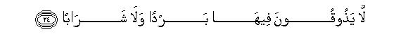
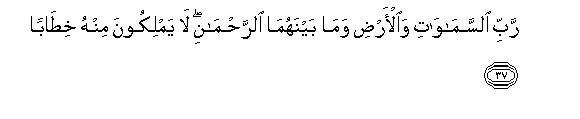
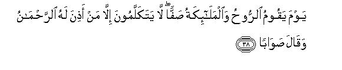
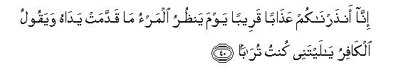

بسم الله الرحمن الرحيم
Sayyid Abul Ala Maududi - Tafhim al-Qur'an - The Meaning of the Qur'an
 78.
Surah An Naba (The News)
78.
Surah An Naba (The News)
The Surah derived its name from the word an-Naba in the second verse. This is not only a name but also a title of its subject matter, for Naba implies the news of Resurrection and Hereafter and the whole Surah is devoted to the same theme.
As we have explained in the introduction to Surah Al-Mursalat, the theme of all the Surahs, from Al-Qiyamah to An-Naziat, closely resembles one another's, and all these seem to have been revealed in the earliest period at Makkah.
Its theme also is the same as of Surah Al-Mursalat, i. e. to affirm the Resurrection and Hereafter, and to warn the people of the consequences of acknowledging or disacknowledging it.
When the Holy Prophet (upon whom be peace) first started to preach Islam in Makkah, his message consisted of three elements: (1) That none be held as an associate with Allah in Godhead; (2) that Allah had appointed him as His Messenger; (3) that this world will come to an end one day and then another world will be established when all the former and the latter generations will be resurrected with the same bodies in which they lived and worked in the world; then they will be called to account for their beliefs and deeds and those who emerge as believing and righteous in this accountability will go to Paradise and those who are proved to be disbelieving and wicked will live in Hell for ever.
Of these although the first thing was highly unpleasant for the people of Makkah, yet in any case they were not disbelievers in the existence of Allah. They believed in His Being the Supreme Sustainer, Creator and Providence and also admitted that all those beings whom they regarded as their deities, were themselves Allah's creatures. Therefore, in this regard the only thing they disputed was whether they had any share in the attributes and powers of Divinity and in the Divine Being itself or not.
As for the second thing, the people of Makkah were not prepared to accept it. However, what they could not possibly deny was that during the 40 years life that the Holy Prophet (upon whom be peace) had lived among them before his claim to Prophethood, they had never found him a lying deceitful person or the one who would adopt unlawful methods for selfish ends. They themselves admitted that he was a man possessed of wisdom, righteousness and moral superiority. Therefore, in spite of charging him with a thousand false accusations, nothing to say of making others believe, they were finding it difficult even for themselves to believe that although he was an honest and upright man in every other affair and dealing of life, yet, God forbid, a liar only in his claim to be a Prophet.
Thus, the first two things were not in fact so perplexing for the people of Makkah as the third thing. When this was presented before them, they mocked it most of all, expressed unusual wonder at it, and regarding it as remote from reason and impossible, started talking against it as incredible, even inconceivable, in their assemblies. But in order to bring them to the way of Islam it was absolutely essential that the doctrine of the Hereafter should be instilled into their minds, for without belief in this doctrine, it was not at all possible that they could adopt a serious attitude with regard to the truth and falsehood, could change their standard of values in respect of good and evil, and giving up worship of the world, could be inclined to follow the way that Islam urged them to follow. That is why in the earliest Surahs revealed at Makkah the doctrine of the Hereafter has been impressed and stressed more than anything else. However, the arguments for it have been given in such a way that the doctrine of the Oneness of God (Tauhid) also is impressed on the minds automatically. This also contains brief arguments, here and there, to confirm the truth of the Holy Messenger of Allah and the Qur'an.
After understanding well why the theme of the Hereafter has been so frequently repeated in the Surahs of this period, let us now have a look at the subject matter of this Surah. In it first of all, allusion has been made to the common talk and the doubts that were being expressed in every street of Makkah and in every assembly of the people of Makkah on hearing the news about Resurrection. Then, the deniers have been asked: "Don't you see this earth which We have spread as a carpet for you? Don't you see the high mountains which we have so firmly placed in the earth?Don't you consider your own selves how We have created you as pairs of men and women?Don't you consider your sleep by which We make you seek a few hours rest after every few hours labour and toil so as to keep you fit for work in the world? Don't you see the alternation of the night and day which We are so regularly perpetuating precisely according to your needs and requirements?Don't you see the strongly fortified system of the heavens above you? Don't you see the sun by means of which you are receiving your light and heat? Don't you see the rains which fall from the clouds and help produce corns and vegetables and luxuriant gardens? Do these things only tell you that the power of the Almighty Being Who has created them, will be unable to bring about Resurrection and establish the Next World? Then, from the supreme wisdom which is clearly working in this world around you, do you only understand this that although each part of it and each function of it is purposive, yet life is meaningless? Nothing could be more absurd and meaningless that after appointing man to the office of foreman and granting him vast powers of appropriation, in this workhouse, when he leaves the world after fulfilling his role, he should be let off without any accountability. He should neither be rewarded and granted pension on satisfactory work, nor subjected to any accountability and punishment on unsatisfactory performance of duty.
After giving these arguments it has been emphatically stated that the Day of Judgment shall certainly come to pass on its appointed time. No sooner is the Trumpet sounded than whatever is being foretold shall appear before the eyes, and whether you believe in it today, or not, at that time you will come out in your multitudes from wherever you would be lying dead and buried to render your account. Your denial cannot in any way avert this inevitable event.
Then, in vv. 21-30; it has been stated that every single misdeed of those who do not expect any accountability to take place and have thus belied Our Revelations, lies reckoned and recorded with Us, and Hell is ever lying an ambush to punish them and punish them fully for all their doings. Then, in vv. 31-36, the best rewards of those who lived as responsible people in the world and have provided for their Hereafter beforehand have been mentioned. They have been reassured that they will not only be rewarded richly for their services but in addition they will also be given sufficient gifts.
In conclusion, the Divine Court in the Hereafter has been depicted, making it plain that there will be no question of somebody's being adamant in the matter of getting his followers and associates forgiven, none will speak without leave, and leave will be granted on the condition that intercession be made only for the one to whom leave of intercession will have been given, and the intercessor will say only what is right. Moreover, leave for intercession will be given only for those who had acknowledged the Truth in the world but were sinners; rebels of God and rejectors of the Truth will deserve no intercession at all.
The discourse has been concluded with this warning: The Day the coming of which is being foretold, shall certainly come to pass. Do not think it is yet far off, it is close at hand. Now, whoever wills, let him believe in it and take the way towards his Lord. But he who disbelieves, in spite of the warning, "will have all his deeds placed before him: and he will exclaim regretfully: "Oh, would that I were not born in the world!" At that time, his regrets will be about the same world of which he is so enamored today!

In the name of Allah, the Compassionate, the Merciful.
[1-5] About what are they inquiring? Is it about the Great News concerning which they are at variance?1 By no means!2 They shall soon know. Yes, by no means! They shall soon know!3

[6-16] Is it not a fact that We have made the earth a bed4 and set the mountains as pegs5 and created you as pairs (of men and women),6 and made your sleep for rest7 and the night a covering and the day for seeking livelihood,8 and established above you seven strong heavens,9 and set a bright, blazing lamp,10 and rained water from the clouds in abundance that We may produce thereby corn and vegetables and lush gardens?11
[17-20] Surely the Day of Decision is an appointed time. The day the Trumpet is blown, you shall come out in multitudes,12 and the heaven shall be opened so as to become all doors, and the mountains shall be set in motion till they become as a mirage.13

[21-30] Hell, in fact, is an ambush,14 the abode for the rebellious in which they shall remain lodged for ages.15 In it they shall not taste any coolness nor any drink, except boiling water and the washing from wounds,16 a full recompense (for their misdeeds). They did not expect any reckoning and had treated Our Revelations as utterly false,17 whereas We had counted and preserved everything in writing.18 Now taste it, for We shall never increase anything for you except the torment.

[31-37] Surely for the righteous19 there is an abode of success. Gardens and vineyards and maidens of equal age20 and brimful cups. There they shall neither hear idle talk nor any falsehood,21 a reward and sufficient gift22 from your Lord, from the All-Merciful God, Who is the Owner of the heavens and the earth and of everything lying between them, before Whom none can have the power to speak.23

[38-39] The Day when the Spirit24 and the angels shall be standing up in ranks, none shall speak except the one whom the Merciful may permit, and who speaks what is right.25 That Day is sure to come. Now whoever wills, let him take the path back to his Lord.

[40] We have warned you of the torment which is near at hand.26 The Day when man will see all that his hands have sent forward, and the disbeliever will cry out: "Would that I were mere dust!"27
1"The Great News": the news of the Resurrection and Hereafter, which the people of Makkah heard with amazement, then raised questions and doubts about it in their assemblies. When they met each other they would ask: "Did you ever hear that the dead will be resurrected to life? Is it credible that life will be infused once again into the bones which have decayed and become rotten? Does it stand to reason that the former and the latter generations will rise up and gather together at one place? Is it possible that these huge mountains which are so firmly set in the earth will fly about like flakes of wool? Can it so happen that the sun and the moon and the stars should be extinguished and the order and system of the world be overturned and upset? What has happened to him who was until yesterday a sane and wise man among us? Today he is giving us strange, impossible news. Where were this Hell and Heaven of which we had never heard from him before? where from have they appeared suddenly so that he has started depicting them so vividly before us?"
Another meaning of fi-hi mukhtalifun also can be: "As these people themselves are not agreed on any one view about the end of the world, they hold varying views about it." Some one has been influenced by the Christian belief and believes in the life after death but thinks that the second life would not be a physical but only a spiritual life. Another does not deny the Hereafter absolutely but doubts whether it was possible or not. The Qur'an relates the view of these very people when it says: "We do only guess: we are not certain." (Al-Jathiyah: 32). And another plainly said: "There is no other life than this present life, and we shall never be raised back to life after our death." (Al-An`am: 29). Then, there were some atheists, who said: "Life is only this worldly life of ours. Here we shall die and live and nothing but the change of time destroys us." (Al-Jathiyah: 24). There were some others who were not atheistic but they regarded the second life as impossible. According to them it was beyond the power of God to raise the dead back to life. They said, "Who will give life to these bones when they are rotten." (Ya Sin: 78). Their different views by themselves were a proof that they had no knowledge in this regard; they were only conjecturing and guessing. Had they any knowledge they would have agreed on one view. (For further explanation, see E.N. 6 of Surah Adh-Dhariyat).
2That is, whatever they say about the Hereafter is false, and all their concepts about it are wrong.
3That is, the time is not far off when the same thing about which they are expressing all sorts of meaningless doubts and misgivings, will appear before them as a reality. Then they will realize that what the Messenger had foretold was absolutely true and what they were saying on the basis of conjecture and speculation had no truth in it.
4Enough light has been thrown at several places in The Meaning of the Qur'an on the supreme wisdom and power of Allah that underlies His making the earth a carpet, i.e. an abode of perfect peace and rest. For explanation, see E.N.'s 73, 74, 81 of An-Naml, E.N. 29 of Ya Sin, E.N.'s 90, 91 of Al-Mu'min, E.N. 7 of Az-Zukhruf, E.N. 7 of Al-Jathiyah, E.N. 18 of Surah Qaf.
5For the wisdom of creating mountains on the earth, see E.N. 12 of AnNahl, E.N. 74 of An-Naml, E.N. 15 of Al-Mursalat.
6For explanation of the supreme wisdom that underlies the creation of men and women into pairs, see E.N. 69 of AI-Furgan, E. N.'s 28 to 30 of Ar-Rum, E.N. 31 of Ya Sin, E.N. 77 of Ash-Shura, E N.12 of Az-Zukhruf, E.N. 25 of Al Qiyamah.
7The explanation of the wisdom for which Allah Almighty has placed a desire for sleep in man's nature in order to make him fit for work in the world, and which impels him to a few hours' sleep after every few hours of work, has been given in E.N. 33 of Surah Ar-Rum.
8That is, "The night has been made dark so that protected from light, you could enjoy a peaceful sleep- more easily and made the day bright for the reason that you could work for your livelihood with greater ease and facility. Reference has been made to only one benefit out of countless benefits of the continuous alternation of night and day regularly on the earth to tell that all this is not happening without a purpose or accidentally, but there is supreme wisdom underlying it, which has a deep connection with your own immediate interests. The darkness that was needed for the peace and rest of your body in view of its structure has been provided in the night and the light that was needed for earning livelihood has been provided in the day. This arrangement that has been made precisely in accordance with your needs by itself testifies that it could not be possible without the wisdom of a Wise Being." (For further explanation, see E.N. 65 of Yunus, E.N. 32 of Ya Sin, E.N. 85 of AI-Mu'min, E.N. 4 of Az-Zukhruf).
9"Strong" in the sense that their boundaries are so strongly fortified that no change whatever occurs in them, nor does any of the countless stars and planets in the heavens, violating these boundaries, collide with the other, nor falls down to the earth. (For further explanation, see E.N. 34 of Al-Baqarah, E.N. 2 of Ar Ra'd, E.N.'s 8, 12 of Al-Hijr, E.N. 15 of AI-Mu'minun, E.N. 13 of Luqman, E.N. 37 of Ya Sin, E.N.'s 5, 6 of As-Saaffat, E.N. 90 of Al-Mu'min, E.N.'s 7, 8 of Surah Qaf).
10"A bright, blazing lamp": the sun. The word wahhaj used for the sun means both intensely hot and intensely bright. Hence our rendering. In this brief sentence, allusion has been made to a most wonderful and glorious sign of Allah Almighty's power and wisdom which the sun is. Its diameter is 109 times that of the earth's and its size more than 333,000 tunes that of the earth's. Its temperature is 14,000,000 C. In spite of shining 93,000,000 miles away from the earth, its light and brightness is dazzling, and man can look at it with the naked eye only at the risk of losing his eye-sight. As for its heat, temperature in some parts of the earth reaches 140 F. because of its radiation. It is only Allah Who by His wisdom has placed the earth at the right distance from it, neither it is too hot for being close to it, nor too cold for being very far away from it. For this very reason life of man, animal and vegetable became possible on it. Measureless treasures of energy from it are reaching the earth and sustaining life. It helps ripen our crops to provide sustenance to every creature; its heat causes vapors to rise from the seas, which spread to different parts of the earth by means of the winds and fall as rain. In the sun Allah has kindled such a mighty furnace that has been constantly radiating light, heat and different kinds of rays throughout the entire solar system since millions and millions of years.
11For the details of the wonderful manifestations of Allah Almighty's power and wisdom in making arrangements for the rain and the growth of vegetation thereby, set E.N. 53 (a) of An-Nahl, E.N. 17 of AI-Mu'minun, E.N. 5 of Ash-Shua'ra', E.N. 35 of Ar-Rum E.N. 19 of Fatir E.N. 29 of Ya Sin, E.N. 20 of Al-Mu'min, E.N.'s 10, 11 of Az-Zukhruf, E.N.'s 28 to 30 of Al-Waqi'ah.
After presenting a number of the signs and testimonies, one after the other, in these verses, the deniers of the Resurrection and Hereafter have been exhorted, so as to say: "If you consider the earth and the mountains and your own creation, your sleep and wakefulness, and the system of the day and night intelligently, and consider the well-fortified system of the universe and the shining sun in the heavens, the rain falling from the clouds and the vegetables growing thereby, you will see two things very clearly: first, that all this could neither come into existence without a mighty power, nor continue to exist and function so regularly; second, that in each of these great wisdom is working and nothing that happens here is purposeless. Now, only a foolish person could say that the Bring Who by His power has brought these things into existence, does not have the power to destroy them and create them once again in some other form, and this also could be said only by an unreasonable person that the Wise Bring Who has not done anything without purpose in this universe, has given to man in His world understanding and intelligence, discrimination between good and evil, freedom to obey or disobey, and powers of appropriation over countless of His creatures, without any purpose and design: whether man uses and employs the things granted by Him in the right way or the wrong way, it does not make any difference; whether man continues to do good throughout life till death, he will end up in the dust, or continues to do evil till death, he will likewise end up in the dust; neither the virtuous man will receive any reward for the good deeds nor the bad man will be held accountable for his evil deeds. These very arguments for life after death and Resurrection and Hereafter have been given here and there in the Qur'an, e.g. see E.N. 7 of Ar Ra'd, E.N. 9 of Ai-Hajj, E.N. 6 of Ar-Rum, .E.N.'s 10, 12 of Saba, E.N.'s 8, 9 of As-Saaffat.
12This implies the final sounding of the Trumpet at which all dead men will rise back to life forthwith. "You" implies not only those who were the addressees at that time but all those humans who will have been born from the beginning of creation till Resurrection. (For explanation, see E.N. 57 of Ibrahim, E.N. 1 of Al Hajj, E.N.'s 46, 47 of Ya Sin, E.N. 79 of Az-Zumar).
13One should bear in mind the fact that here also, as at many other places in the Qur'an, the different states of Resurrection have been mentioned all together. In the first verse, mention has been made of what will happen at the final sounding of the Trumpet and in the following two verses of the state which will appear at the second sounding of the Trumpet. This we have already explained in E.N. 10 of Surah Al-Haaqqah above. "The heavens shall be opened" means: All obstacles in the heavens will be removed and every heavenly calamity from every side will be befalling freely as though all doors for it were open and no door had remained closed to obstruct its happening. "The mountains will be set in motion till they become as a mirage" means: In no time will the mountains be uprooted from their places and then will be scattered away in particles leaving nothing but vast, empty sand plains behind. "This same state has been described in Surah Ta Ha, thus: They ask you: well, where will the mountains go on that Day? Say to them: My Lord will reduce them to fine dust and scatter it away. He will turn the earth into an empty level plain, wherein you will neither see any curve nor crease." (vv. 105-107 and the corresponding E. N . 83)
14"An ambush": a place contrived to entrap game by surprise. Hell has been described as an ambush, because the rebels of God are fearless of it and are enjoying life thinking that the world is a haven of bliss for them. They do not know that Hell is lying in ambush for them, which will trap them suddenly and keep them trapped.
15The word ahqab as used in the original means successive periods of long time appearing continuously one after the other. From this word some people have tried to argue that there will be eternity in the life of Paradise but no eternity. in the life of Hell. For however long these ages may be, they will not be endless but will come to an end at some time. But this argument is wrong for two reasons. First, that lexically, the word haqab (sing. of ahqab) itself contains the meaning that one haqab should be closely followed by another haqab; therefore, ahqab will necessarily be used only for such periods of time as continue to appear successively one after the other and there should be no period which is not followed by another period. Second, that as a rule it is wrong to put a meaning on a verse of the Qur'an pertaining to a particular theme which clashes with other statements of the Qur'an pertaining to the same theme. At 34 places in the Qur'an the word khulud (eternity) has been used concerning the dwellers of Hell. At three places not only the word khulud has been used but the word abad an (for ever and ever) also has been added to it; and at one place it has been clearly stated: "They will wish to get out of Hell but shall not be able to come out of it and theirs shall be an everlasting torment." (AI-Ma'idah: 37). At another place it has been said: "Therein they shall abide for ever, as long as the earth and the heavens shall last, unless your Lord ordains otherwise." And the same thing has been said about the dwellers of Paradise too:" "They shall dwell in Paradise for ever, as long as the earth and the heavens shall last, unless your Lord wills something else." (Hud: 107-108). After these explanations, how can one argue, on the basis of the word abqab, that the stay of the rebels of God in Hell will not be eternal, but it will come to an end at some stage in time?
16The word ghassaq as used in the original applies to pus, blood, pus-blood and all those fluids that flow out from the eyes and skins as a result of a grievous penalty. Besides, this word is also used for a thing which stinks and gives out horrid, offensive smell.
17This is the reason for which they will deserve this dreadful penalty of Hell. Firstly, they lived in the world thinking that the time will never come when they will have to appear before God and render an account of their deeds; second, that they utterly refused to accept and acknowledge the Revelations that Allah had sent through His Prophets for their instruction and treated them as falsehood.
18That is, "We were continuously preparing a complete record of their sayings and doings, their movements and occupations, even of their intentions. thoughts and aims in life and nothing was being left un-recorded, whereas the foolish people in their heedlessness thought that they were living in a lawless kingdom where they were free to do whatever they pleased and desired. and there was no power to call them to account."
19Here, the word "righteous" has been used in contrast to those who did not expect any accountability and who had belied Allah's Revelations. Therefore, this word inevitably implies those people who believed in Allah's Revelations and lived in the world with the understanding that they had to render an account of their deeds ultimately.
20This may mean that they will be of equal age among themselves as well as that they will be of equal age with their husbands. This same theme has already occurred in Surah Suad 52 and Al-Waqi`ah :37 above.
21At several places in the Qur'an this has been counted as among the major blessings of Paradise. Human ears there will remain secure against idle, false and indecent talk. There will be no nonsensical, meaningless gossiping in Paradise; no one will tell lies nor belie others; nor will there be any use of abusive language, slandering; calumnies and false accusations which are so common in the world. (For further explanations, see E.N. 28 of Surah Maryam, E.N.'s 13, 14 of Al Waqi`ah).
22"A reward and sufficient gift": that is, they will not only be given their due rewards which they will deserve for their good deeds, but over and above these they will be given additional and sufficient gifts and prizes as well. Contrary to this, in respect of the dwellers of Hell it has been said: "They will be recompensed fully for their misdeeds." That is, they will neither be punished less than what they will deserve for their crimes nor more. This theme has been explained at length at many places in the Qur'an, for example, see Yunus: 26-27, An-Naml: 89-90, Al-Qasas: 84, Saba: 33-38, Al-Mu'min: 40.
23That is, the Court of Allah Almighty will be so awe-inspiring that no one, whether belonging to the earth or to the heavens, will dare open his mouth of his own will before Allah, nor interfere in the Court's work and proceedings.
24According to most commentators, "the Spirit" implies the Angel Gabriel (peace be on him), who has been mentioned separately from the angels because of his high rank and position with Allah. (For further explanation, see E.N. 3 of Al-Ma`arij).
25"To speak": to intercede, and intercession has been made conditional upon two things:
(1) That the person who is granted permission by Allah to intercede for a sinner will alone be allowed to intercede and for the particular sinner only; and
(2) that the intercessor will say only what is right and proper, and nothing derogatory, and the one for whom he is interceding should have at least acknowledged the Truth in the world. That is, he should only be a sinner, not an unbeliever. (For further explanation, see E.N. 281 of Al-Baqarah, E.N. 5 of Yunus, E.N. 106 of Hud, E.N. 52 of Maryam, E.N.'s 85, 86 of Ta Ha, E.N. 27 of Al-Anbiya', E.N.'s 40, 41 of Saba. E.N. 32 of Al-Mu'min, E.N 63 of Az-Zukhruf, E N. 21 of An-Najm, E.N. 36 of Al-Muddaththir).
26Apparently, one might think that the people who were the audience of this verse died fourteen centuries ago, ,and even now it cannot be said how many hundreds or thousands or millions of years Resurrection will take to come. Then, in what sense has it been said: "The torment of which you have been warned, has approached near at hand?" And what is the meaning of saying in the beginning of the Surah: "Soon they shall know?" The answer is that man can have the feeling of time only until he is passing a physical life in the world within the bounds of space and time. After death when only the soul will survive, he will lose every feeling and consciousness of time, and on the Day of Resurrection when man will rise back to life, he will feel as though some one had aroused him from sleep suddenly. He will not at all be conscious that he has been resurrected after thousands of years. (For further explanation, see E.N. 26 of An-Nahl, E.N. 56 of Bani Isra'il, E.N. 80 of Ta Ha, E.N. 48 of Ya Sin).
27"Would ......dust": "Would that I had not been born in the world, or had become mere dust after death, and thus reduced to nothingness."